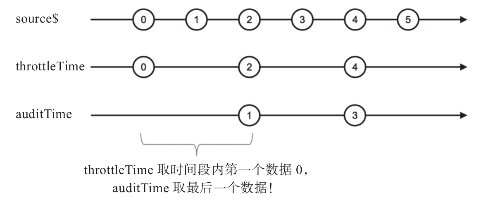
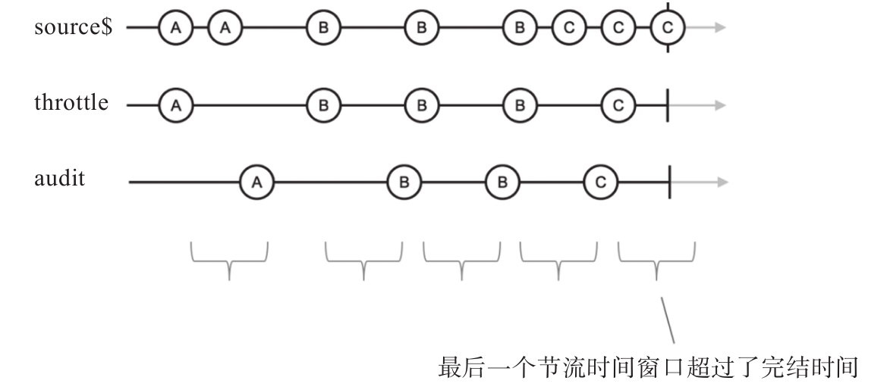

audit翻译过来的意思是“审计”或者“查账”，从字面上看不出它的具体含义。但实际上，可以认为audit是做throttle类似的工作，不同的是在“节流时间”范围内，throttle把第一个数据传给下游，audit是把最后一个数据传给下游。
和throttle有两个相关的操作符一样，也有两个“审计”相关的操作符，分别是auditTime和audit，先来看一看auditTime是怎么回事，然后就容易理解audit了。
下面是使用auditTime的示例代码：
import {Observable} from 'rxjs/Observable';
import 'rxjs/add/observable/interval';
import 'rxjs/add/observable/timer';
import 'rxjs/add/operator/auditTime';
const source$ = Observable.interval(1000);
const result$ = source$.auditTime(2000);
result$.subscribe(
console.log,
null,
() => console.log('complete')
);
这段程序的输出如下：
1 3 5
对比同样duration参数的throttleTime的输出，从图7-18可以看到区别。

图7-18 auditTime的弹珠图
一开始throttleTime和auditTime都不处于“节流状态”，当上游source$产生数据0的时候，节流的动作开始了，节流的时间就是参数duration的毫秒数，对应上面的例子，节流的时间就是2000毫秒，在这2000毫秒时间里产生的所有数据，无论对于throttleTime还是auditTime，都只会放一个数据进入下游，问题就是选择放哪一个数据？
throttleTime的选择是放节流时间窗口中第一个数据，也就是引发节流开始的那一个数据，在上面的例子中就是0、2、4这些数据；auditTime的选择和throttleTime相反，选择节流时间窗口里最后一个数据，在上面的例子中就是1、3、5这些数据。
理解了throttleTime和auditTime的区别，加上理解throttleTime和throttle的区别，很自然就能知道throttle和audit的区别。
audit也接受durationSelector这样的函数参数，下面是示例代码：
const source$ = Observable.interval(500).take(2).mapTo('A')
.concat(Observable.interval(1000).take(3).mapTo('B'))
.concat(Observable.interval(500).take(3).mapTo('C'));
const durationSelector = value => {
return Observable.timer(800);
};
const result$ = source$.audit(durationSelector);
audit的参数durationSelector和throttle一样，可以根据数据产生一个Observable对象来决定节流的时间，在上面的例子里，我们只用固定的800毫秒延时。
图7-19展示了audit的弹珠图，通过弹珠图对比，可以进一步看出throttle和audit产生数据流的区别。

图7-19 audit的弹珠图
值得注意的是，throttle向下游传递了5个数据，audit只传递了4个数据，这是因为最后一个节流时间窗口超过了完结时间。根据audit的定义，它要取出节流时间窗口中最后一个产生的数据，但是如果节流时间窗口范围内上游就完结了，那么audit也就不传递数据了，直接把完结的信号传给下游。